Layout, hierarchy, typography, colour and spacing only. No animation, materials, shadows or Rust/window changes. Captures are the real notch geometry — 152×30 collapsed/hover and 420×150 expanded — at 1.5× device scale.
1. Content sat as a flat left slab with a dead right half. It is now a two-zone composition with a deliberate clock/action gutter.
2. Type collapsed into near-equal 10–13px steps. The scale is now 19/15/12/10, with weight doing the rest.
3. Water had a stranded bottle and an amount that collided with the edge. Amount, bottle and drink action now read as one related group.
4. To-do's clock and count collided with content; rows were cramped. The clock has its own gutter and the four rows plus count fit cleanly.
5. Tabs were a dense six-item strip and light mode was a broken inversion. Seven tabs fit at 10px, and light is a first-class token set. Settings was missing entirely and is now a real page.
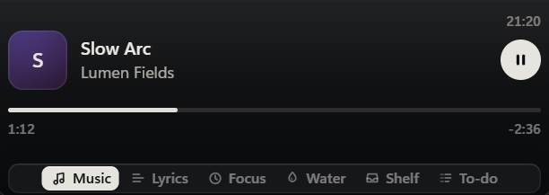
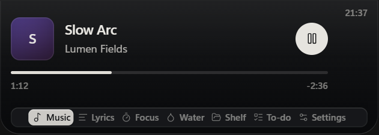
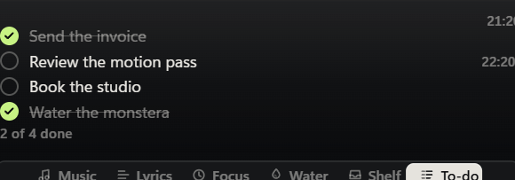
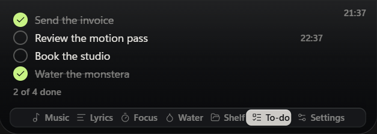
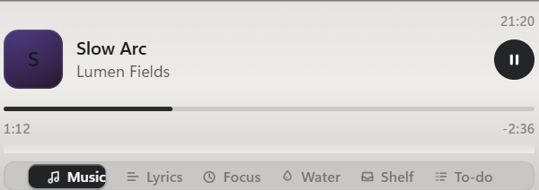
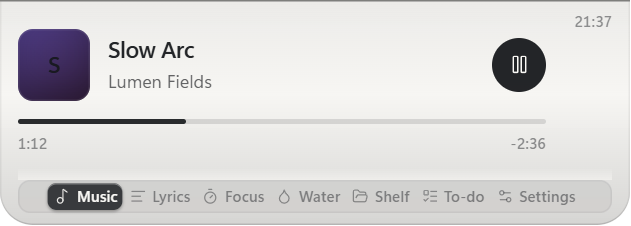
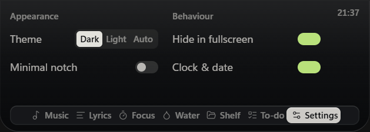
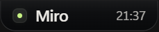
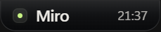
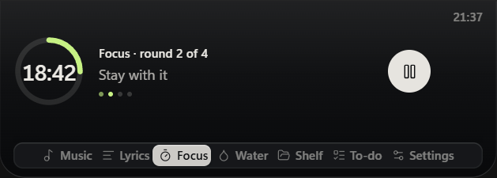
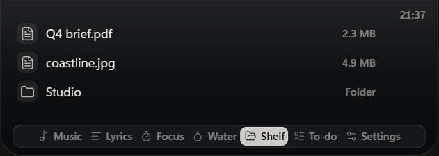
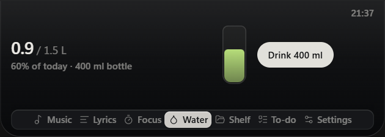
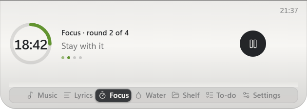
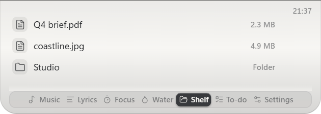
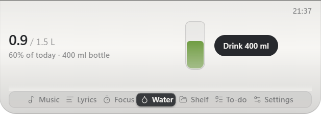
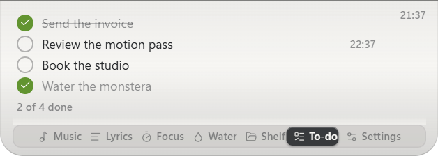
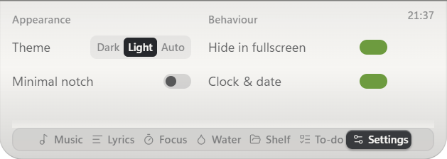